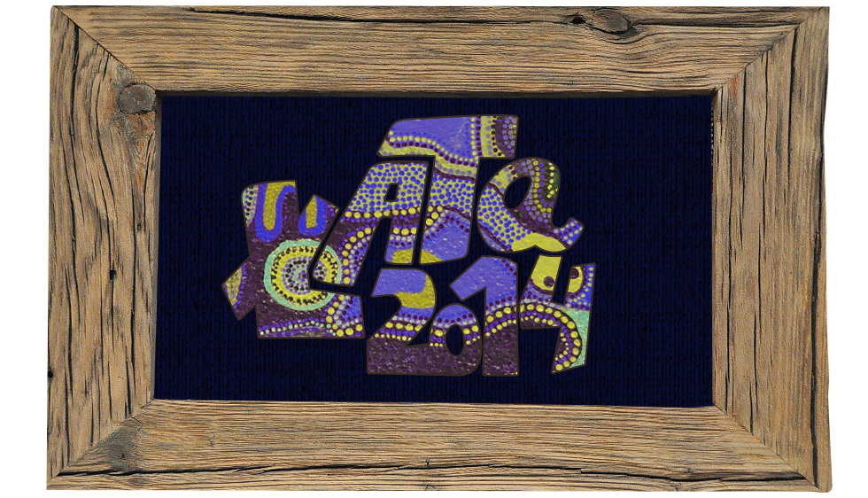
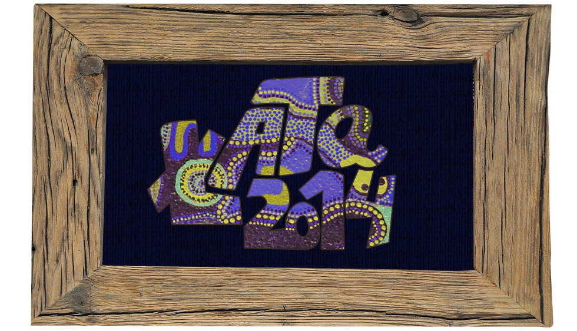
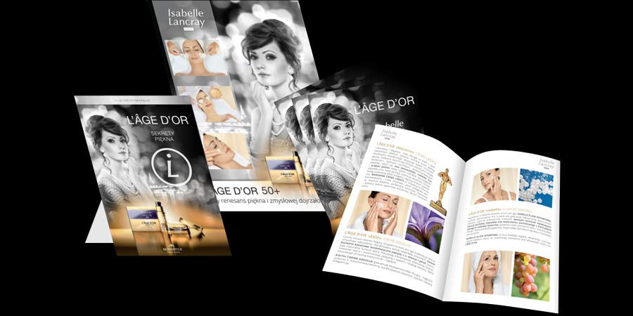
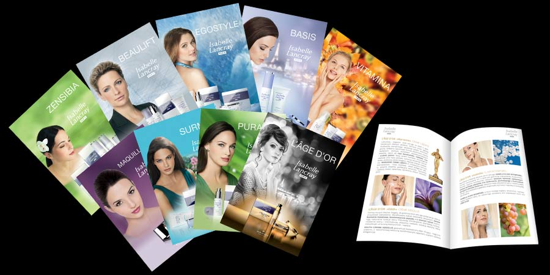
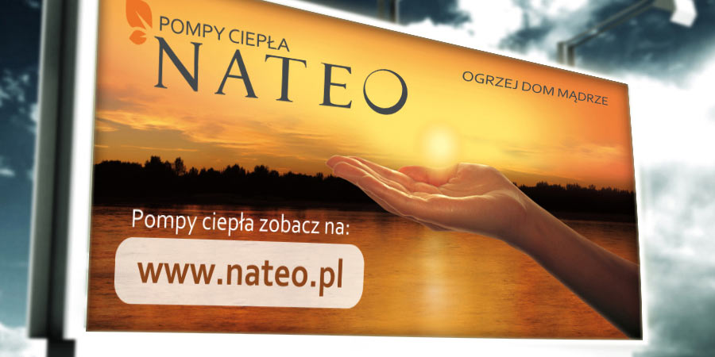
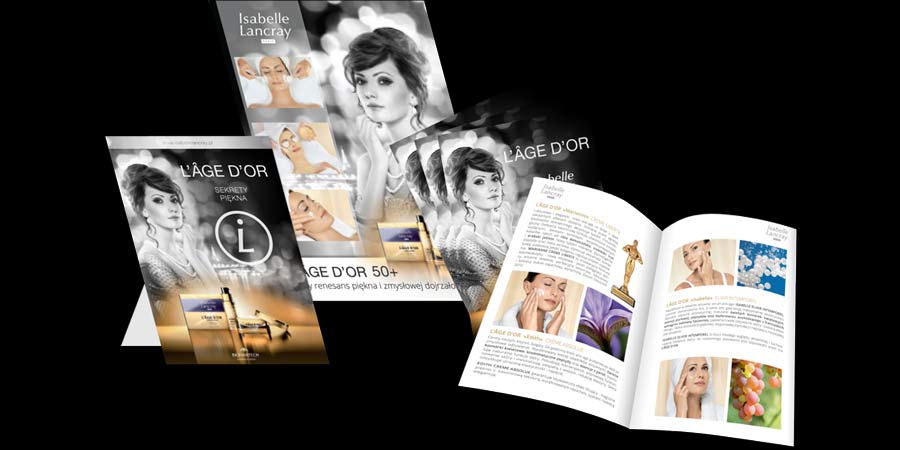
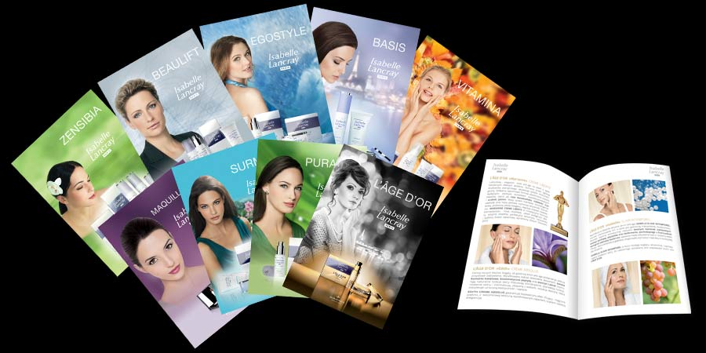
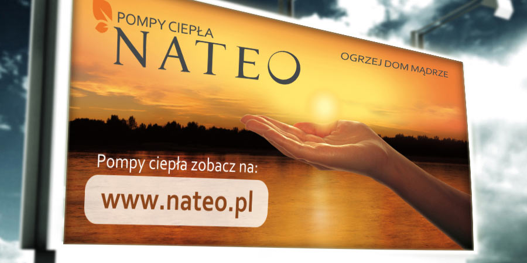

warsztaty kreatywne
Warsztaty Świat Animacji
Film zrealizowany w ramach warsztatów animacji komputerowej "Warsztaty Świat Animacji" (2010 r.) w Filii Domu Kultury w Łomiankach. Uczestnicy warsztatów mieli za zadanie stworzyć swoją autorską historię i zobrazować ją poprzez zrobienie z papieru, włóczki itp. prac plastycznych, z których w kolejnym etapie tworzyli komputerową animację poklatkową. Całość projektu uzupełnił montaż dźwięków nagranych przez dzieci.
Warsztaty Street Art
Realizacja projektu "Seis dimenciones" we współpracy z Fundacją Faktoria Artystyczna. Koordynacja nad działaniami na terenie Filii Domu Kultury w Łomiankach, animowanie uczestników warsztatów tworzących murale, przygotowanie wystawy dzieci oraz polskich i hiszpańskich artystów zaangażowanych w projekt. Warsztaty dla dzieci z Burakowa przeprowadzili Alvaro Alonso Martinez, José Manuel i Sanzo Iñigo Gracianteparaluceta z Centrum Artystycznego Certamen de Arte Hormonado "LaCuchara".
Warsztaty w Łazienkach Królewskich
Autorskie warsztaty w przestrzeni Pałacu na Wyspie, Starej Kordegardy i Amfiteatru, prowadzone w ramach interdyscyplinarnych projektów dla rodzin z dziećmi: "Łazienkowi Opowiadacze" i "Okulary Salomona" (m.in. "Latające mandarynki", Multimedialna opowieść o wiewiórce", "Zaczarowane Powietrze", "Nieobliczalne Oblicza Ziemi", "Laboratorium Kolorów", "Czasomierz", "Czemu fajans jest fajny". Poznawanie zabytków i historii Łazienek Królewskich stało się pretekstem do niestandardowych działań kreatywnych umożliwiających łatwiejsze zrozumienie sztuki przez najmłodszych odbiorców.
Międzynarodowy Dzień Wolnej Książki
Rodzinne warsztaty tworzenia bajowych instalacji książkowych inspirowanych wierszami J. Tuwima i Kwartalnikiem Literackim Wisła przeprowadzone 20 czerwca 2013 w Auchan Łomianki. Adresatami warsztatów byli klienci centrum handlowego, którzy miel stworzoną możliwość twórczego spędzenia czasu ze swoimi dziećmi. W trakcie, gdy dzieci z pomocą animatorów wykonywały swoje autorskie książki, rodzice czytali im przygotowane przez Dom Kultury wiersze J. Tuwima.
Warsztaty interdyscyplinarne dla dzieci
Prowadzenie autorskich warsztatów łączących edukację z zakresu historii sztuki z działaniami kreatywnymi. W trakcie zajęć staram się dopasować poziom przekazu do wieku odbiorców, także wprowadzać niekonwencjonalne materiały i techniki plastyczne oraz elemanty teatralne.

 

 




